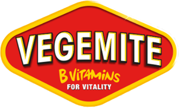

베지마이트 Vegemite
베지마이트(Vegemite)는 효모 추출물로 만드는 오스트레일리아의 진갈색 스프레드이다. 짭조름하고 약간 쌉싸름하며 빵이나 크래커에 얇게 발라 먹는다.
최종 업데이트

베지마이트는 어떤 브랜드인가
베지마이트는 맥주 양조 과정에서 나오는 효모를 가공해 만드는 끈적한 페이스트이며, 오스트레일리아의 국민 음식 가운데 하나이다. 소금과 셀러리, 양파 추출물을 혼합한 짙은 색과 강한 풍미가 특징이다.
출시 초기에는 판매가 부진했고 1928년부터 1935년까지 Parwill이라는 이름을 사용했으나 시장 점유율 확대에 실패했다. 1935년부터 Kraft Walker Cheese Co.의 가공 치즈와 연계한 판촉으로 판매를 촉진했다.
제2차 세계 대전에는 오스트레일리아 군의 전투식량으로 배급했으며, 1940년 후기에는 오스트레일리아 10가구 중 9가구가 이용했다.
베지마이트는 어떻게 시작되고 성장했나
Fred Walker & Co.는 제1차 세계 대전 이후 Marmite의 영국 수입이 중단되자 1919년 Callister에게 버려지는 맥주 효모로 스프레드를 만들도록 했다. Callister는 효모세포를 자가분해하고 Carlton & United 양조장의 맥주 찌꺼기에서 얻은 추출물을 농축했다.
브랜드의 설립 시점은 1922년이며, 이름은 Fred Walker의 딸 Sheilah가 선택했다. 제품은 1923년 오스트레일리아 시장에 처음 출시했으며 아동 건강에 좋은 제품으로 광고했으나 초기 판매 실적은 부진했다.
베지마이트의 브랜드 아이덴티티는 무엇인가
맥주 양조 부산물인 효모를 진한 페이스트로 가공한 독특한 풍미와 오스트레일리아 국민 음식으로 여겨지는 위상이 구분점이다.
베지마이트의 대표 제품과 서비스는 무엇인가
대표 제품은 효모 추출물을 농축해 소금과 셀러리, 양파 추출물을 혼합한 끈적한 검은 스프레드이다. Callister가 개발한 원 제조법을 변형하지 않고 생산하며, 짭조름하고 약간 쌉싸름한 맛을 낸다.
주로 빵이나 크래커 위에 적은 양을 얇게 펴 발라 먹는 방식으로 소비한다. 115G(4.1 oz) 병 제품은 1984년 4월 오스트레일리아에서 전자 스캔으로 결제된 첫 제품이다.
Marmite를 비롯한 유사한 효모 추출물 스프레드와 경쟁하는 상품이다.
베지마이트는 지금 어떤 상태인가
멜버른 항에 있는 Bega Cheese의 제조 시설에서 해마다 2,200만 병을 생산하며, 이 시설은 이전에 Mondelez의 시설이었다. 2008년 10월에는 10억 번째 병을 제조했으며, 현재 Marmite와 다른 유사 스프레드보다 더 많이 판매한다.
뉴질랜드에서는 50년 이상 제조했으나 2006년 8월부터 생산을 중단했다.
베지마이트 로고는 어떻게 변해왔나
자주 묻는 질문
베지마이트는 언제 설립되었나요?
베지마이트는 1922년 설립되었습니다.
베지마이트는 어떤 산업의 브랜드인가요?
베지마이트는 식음료 분야의 브랜드입니다.
베지마이트의 브랜드 아이덴티티는 무엇인가요?
맥주 양조 부산물인 효모를 진한 페이스트로 가공한 독특한 풍미와 오스트레일리아 국민 음식으로 여겨지는 위상이 구분점이다.
베지마이트의 대표 제품은 무엇인가요?
대표 제품은 효모 추출물을 농축해 소금과 셀러리, 양파 추출물을 혼합한 끈적한 검은 스프레드이다.
베지마이트는 현재 어떤 상태인가요?
멜버른 항에 있는 Bega Cheese의 제조 시설에서 해마다
베지마이트의 공식 웹사이트는 어디인가요?
베지마이트의 공식 웹사이트는 http://www.vegemite.com.au/ 입니다.
출처와 검증
베지마이트 관련 참고: 공식 웹사이트 · 위키데이터 Q841470 · 한국어 위키백과 · 영어 위키백과. 브랜드명은 한글과 원어를 함께 표기하되 데이터에 없는 표기는 만들지 않습니다. 기원 국가·설립연도는 검수된 정의문에서 확인된 값을 우선하고, 없을 때만 공식 웹사이트 URL이 일치하는 위키데이터 개체의 값을 씁니다. 위키데이터 값은 2026-09-20 기준입니다.